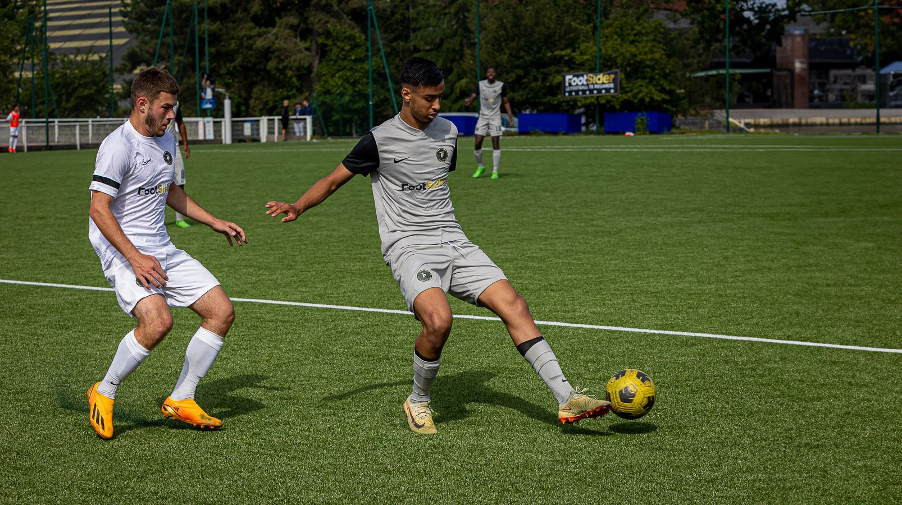
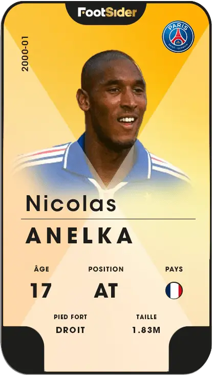
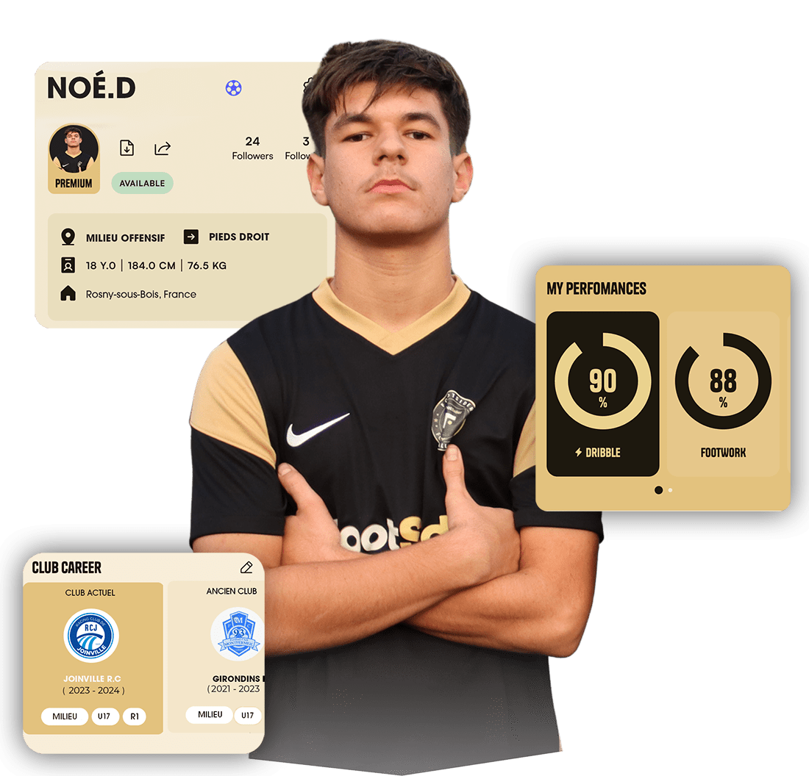

Conseils Détection
Comment préparer sa session de détection physique et mentale ?
Tous les secrets des recruteurs professionnels pour attirer l'œil des scouts lors de vos 90 minutes sur le terrain.
Conseils pour réussir ses détections, actualités du recrutement et retours d'expérience pro

Tous les secrets des recruteurs professionnels pour attirer l'œil des scouts lors de vos 90 minutes sur le terrain.

Retour sur la vision du co-fondateur de Footsider et comment la technologie change le destin des jeunes joueurs amateurs.

Quels clips de match sélectionner ? Comment remplir ses données athlétiques pour certifier son profil auprès des clubs.